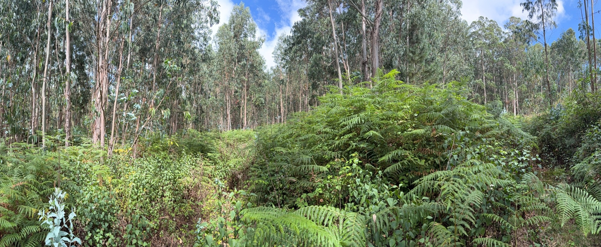

2026 — The Baseline
Every valley has a story.
This one is beginning again.
A wild Madeiran landscape at the beginning of its agricultural regeneration.
Enter the story
A wild Madeiran landscape at the beginning of its agricultural regeneration.
Enter the storyA landscape shaped by time, water and abandonment.
Boqueirão begins as a wild Madeiran valley — dense with eucalyptus,
ferns and spontaneous vegetation, with much of its agricultural
structure hidden beneath years of growth.
Our first task is not to impose a finished vision upon it, but to
understand what is already here: the land, the soil, the movement
of water, the existing terraces and the ecology that has developed
in their absence.
Regeneration begins with questions, not answers.
Map the slopes, existing access, hidden terraces and the structure of a valley currently obscured by dense vegetation.
Observe how water moves through the site before deciding where to retain it, redirect it or build around it.
Assess its structure, organic matter, fertility and condition before choosing crops or beginning major interventions.
Regeneration is not simply clearing land. It means understanding what should remain, what should change and what the valley needs next.
The valley will be rebuilt from its foundations.
The sequence matters. Before productivity comes understanding; before planting comes soil, water and structure. Each intervention will respond to what we learn from the land rather than forcing the valley into a predetermined model.
Understand its condition, rebuild organic matter and create the biological foundation for what follows.
Observe, capture and manage water according to the natural movement and topography of the valley.
Increase ecological complexity and create a more resilient landscape around future production.
Recover and adapt the agricultural structure of the valley where the terrain and evidence support it.
Introduce crops progressively, choosing species and systems in response to the conditions we uncover.
Regeneration is not a before-and-after moment.
Boqueirão will evolve gradually. Each year will leave evidence: what we discovered, what changed, what worked and what the valley taught us. The plan provides direction, but the land will determine the pace.
Document the starting point, study the landscape, assess soil and water, and begin building a reliable picture of the valley.
Begin the first carefully selected interventions, informed by the baseline and by what the site reveals.
Progressively restore productive structure and establish planting where conditions support it.
Allow the emerging agricultural system to mature, measure its performance and adapt the next phase to real results.
Transformation should be documented, not merely described.
Selected viewpoints across Boqueirão will be photographed repeatedly from the same position and orientation. Over time, these images will become a visual record of how the landscape changes — and of what regeneration actually achieves.
Each baseline point will be recorded so future photographs can reproduce the framing as closely as possible. The archive will grow with the valley.
A regeneration project should leave a trail of evidence.
Field Notes will document observations, decisions, interventions and lessons as Boqueirão evolves. Not a polished retrospective, but a working record of the project as it actually happens.
The valley is documented in its current unmanaged state: dense vegetation, mature eucalyptus, ferns and an agricultural structure that is still difficult to read beneath the growth. These photographs establish the visual starting point against which future change can be measured.
Soil, water, access, vegetation and existing landscape structure will be documented here as the first detailed site work begins.
Future entries will record what was done, why it was done, what changed and what the evidence suggests should happen next.
The future of Boqueirão will be earned by the land.
Our ambition extends beyond production, but the sequence matters. Boqueirão must first become a functioning, resilient agricultural landscape. Only then should new ways of experiencing the valley grow around what has genuinely been created here.
Establish a resilient agricultural system rooted in soil health, water management, biodiversity and production adapted to the valley.
As the project matures, the valley may become a place to learn, taste, visit and understand regenerative agriculture through authentic experiences connected to the work itself.
In time, and only where appropriate, agrotourism could allow guests to experience Boqueirão more deeply — with hospitality growing from the agricultural project rather than replacing it.
Build the landscape first. Let the experiences emerge from what becomes real.
This website will evolve with the valley. New field notes, photographs and observations will be added as the work progresses, creating a continuous record of what happens here.